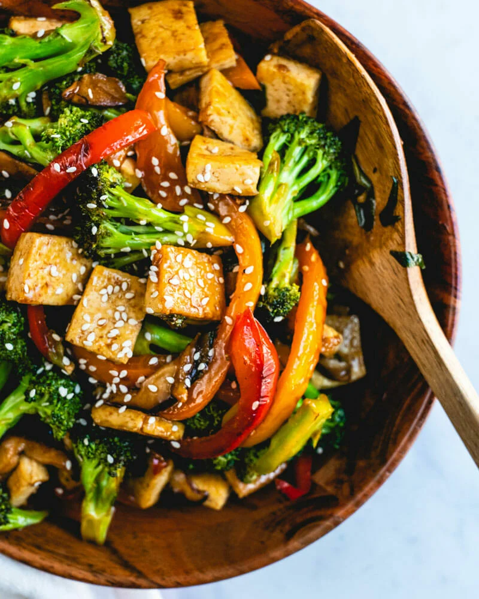

Tofu Stir-Fry

Description
Tofu can be a hard sell. There are many complaints about its bland texture and flavor, but when given a special treatment, a transformation takes place. This recipe calls for extra-firm tofu that has been frozen, a trick my mom taught me. Once defrosted, you’ll see that the tofu has become more porous, almost sponge-like: this new texture enables it to absorb flavors more readily. It works perfectly in a stir-fry and equally well in soups and stews. Another one of mom’s tricks? To simmer the tofu in salted water briefly before stir-frying. Apparently this makes the tofu hardier and less likely to crumble when jostled in the pan. I don’t question my mother’s wisdom, but this step is totally optional.
Ingredients
- 1 block extra-firm tofu, fresh or frozen and defrosted
- 1 tbsp low-sodium soy sauce
- 2 tbsp low-sodium soy sauce
- 2 small carrots, sliced
- 1 small head broccoli, cut into florets
- 1 red bell pepper, seeded and sliced
- 1 tbsp packed brown sugar
Steps
- In a medium pot of salted boiling water, simmer tofu for 2 minutes. If using frozen tofu, simmer until completely defrosted. Remove from heat and let drain in a colander lined with paper towels. When cool enough to handle, gently squeeze and pat dry. If using frozen tofu, use firmer pressure to squeeze out water.
- Cut tofu into bite-sized pieces, then toss together with soy sauce, sesame oil, and black pepper in a medium bowl. Once liquids are absorbed, toss tofu with cornstarch.
- In a large skillet over medium-high heat, heat 2 tablespoons oil. Add tofu and let cook until golden on all sides, turning occasionally, 7 to 8 minutes. Season with salt and pepper, and remove from skillet and set aside.
- Heat remaining 1 tablespoon oil and add in garlic and ginger and cook until fragrant, 1 minute. Stir in string beans, carrots, broccoli, red pepper, and green onions. Cook until tender, about 8 to 10 minutes. Season with salt and pepper.
- In a small bowl, stir together soy sauce, sesame oil, water, brown sugar, and cornstarch. Return tofu to skillet and add sauce mixture to pan. Stir and cook until slightly thickened, 2 minutes.
Back to Homepage